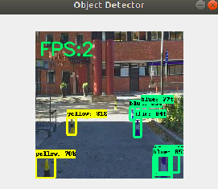
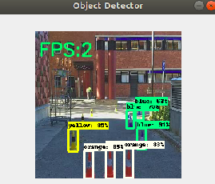
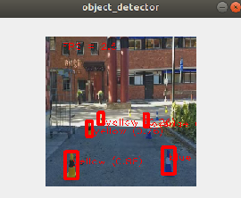
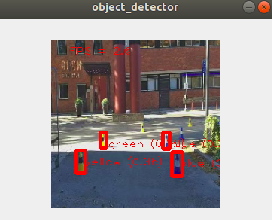

|
An analysis of the tradeoff - Inference Time vs. Accuracy |
How to determine which EfficientDet model is best suited to run with limited computational resources and specified accuracy constraints
An attempt at theoretical understanding of the EfficientDet family of models has been attempted
in this blog. We limit the discussion here to empirical observations
and practical considerations.
"The Edge TPU has approximately 8 MB of SRAM for caching model paramaters, so any model close to
or over 8 MB will not fit onto the Edge TPU memory. That means the inference times are longer,
because some model parameters must be fetched from the host system memory" - Official
Documentation states that EfficientDet lite2 and lite3 models are such models and will lead to
greater latency. Additionally, there is an aspect of the EfficientDet architecture in which a
certain layer cannot compile for the Edge TPU when it carries more than 20 classes. Due to these
considerations we compare only the EfficientDet-Lite0 and EfficientDet-Lite1 model and their
quantized .tflite formats.
Our findings are summarized below:| AP | AP50 | AP75 | AP_/black | AP_/blue | AP_/green | AP_/orange | AP_/pedestrian | AP_/yellow | APl | APm | APs | ARl | ARm | ARmax1 | ARmax10 | ARmax100 | ARs | |
| EfficientDet0 Intel core i3-4010u CPU 1.7GHz x 4 |
0.60336643 | 0.78846604 | 0.7416517 | -1.0 | 0.8254125 | 0.86059403 | 0.2607493 | 0.4039604 | 0.666116 | 0.6510341 | 0.6805312 | 0.055618312 | 0.7214286 | 0.73108107 | 0.5627712 | 0.6478946 | 0.65534663 | 0.0825 |
| EfficientDet-Lite0 Intel core i3-4010u CPU 1.7GHz x 4 |
0.5824297 | 0.7955279 | 0.7390616 | -1.0 | 0.7915841 | 0.8504950 | 0.2758685 | 0.3534653 | 0.6407355 | 0.631306 | 0.6523127 | 0.0584158 | 0.6866666 | 0.6686186 | 0.5425755 | 0.6043168 | 0.6062886 | 0.055 |
| EfficientDet-1 Intel core i3-4010u CPU 1.7GHz x 4 |
0.54346114 | 0.69820446 | 0.6316695 | -1.0 | 0.8054515 | 0.48415843 | 0.26630923 | 0.42079207 | 0.7405946 | 0.6333985 | 0.6379106 | 0.055603962 | 0.73761904 | 0.75453454 | 0.5518218 | 0.65186393 | 0.66007316 | 0.065 |
| EfficientDet-Lite1 Intel core i3-4010u CPU 1.7GHz x 4 |
0.5420794 | 0.6939186 | 0.60775334 | -1.0 | 0.7853253 | 0.45445544 | 0.2817099 | 0.45445544 | 0.73445094 | 0.6172953 | 0.64930636 | 0.055445544 | 0.6838095 | 0.67096096 | 0.49844155 | 0.57728916 | 0.57757086 | 0.0525 |
EfficientDet-0
 AP: 0.60336643
AP50: 0.78846604
AP75: 0.7416517
AP_/black: -1.0
AP_/blue: 0.8254125
AP_/green: 0.86059403
AP_/orange: 0.2607493
AP_/pedestrian: 0.4039604
AP_/yellow: 0.666116
APl: 0.6510341
APm: 0.6805312
APs: 0.055618312
ARl: 0.7214286
ARm: 0.73108107
ARmax1: 0.5627712
ARmax10: 0.6478946
ARmax100: 0.65534663
ARs: 0.0825
HP-15-r013tx Laptop
Intel Core i3-4010U CPU @ 1.70GHz x 4
FPS: 2
Average Inference Speed: 500 ms
EfficientDet-Lite0
 AP: 0.5824297
AP50: 0.7955279
AP75: 0.73906165
AP_/black: -1.0
AP_/blue: 0.79158413
AP_/green: 0.85049504
AP_/orange: 0.27586856
AP_/pedestrian: 0.35346535
AP_/yellow: 0.6407355
APl: 0.631306
APm: 0.6523127
APs: 0.05841584
ARl: 0.68666667
ARm: 0.6686186
ARmax1: 0.5425755
ARmax10: 0.60431683
ARmax100: 0.6062886
ARs: 0.055
HP-15-r013tx Laptop
Intel Core i3-4010U CPU @ 1.70GHz x 4
FPS: 2.6
Average Inference Speed: 384 ms
RaspberryPi 4
ARM Cortex A72 @ 1.5 GHz x 4
FPS: 1.7
Average Inference Speed: 588 ms
RaspberryPi 4 accelerated with the Coral Edge TPU
ARM Cortex A72 @ 1.5 GHz x 4 and Coral Edge TPU ASIC with 4 TOPS capability
FPS: 8.4
Average Inference Speed: 119.04 ms
EfficientDet-1
AP: 0.54346114AP50: 0.69820446
AP75: 0.6316695
AP_/black: -1.0
AP_/blue: 0.8054515
AP_/green: 0.48415843
AP_/orange: 0.26630923
AP_/pedestrian: 0.42079207
AP_/yellow: 0.7405946
APl: 0.6333985
APm: 0.6379106
APs: 0.055603962
ARl: 0.73761904
ARm: 0.75453454
ARmax1: 0.5518218
ARmax10: 0.65186393
ARmax100: 0.66007316
ARs: 0.065
HP-15-r013tx Laptop
Intel Core i3-4010U CPU @ 1.70GHz x 4
FPS: 1
Average Inference Speed: 1000 ms
EfficientDet-Lite1
AP: 0.5420794
AP50: 0.6939186
AP75: 0.60775334
AP_/black: -1.0
AP_/blue: 0.7853253
AP_/green: 0.45445544
AP_/orange: 0.2817099
AP_/pedestrian: 0.45445544
AP_/yellow: 0.73445094
APl: 0.6172953
APm: 0.64930636
APs: 0.055445544
ARl: 0.6838095
ARm: 0.67096096
ARmax1: 0.49844155
ARmax10: 0.57728916
ARmax100: 0.57757086
ARs: 0.0525
HP-15-r013tx Laptop
Intel Core i3-4010U CPU @ 1.70GHz x 4
FPS: 1.7
Average Inference Speed: 384 ms
RaspberryPi 4
ARM Cortex A72 @ 1.5 GHz x 4
FPS: 1.7
Average Inference Speed: 588 ms
RaspberryPi 4 accelerated with the Coral Edge TPU
ARM Cortex A72 @ 1.5 GHz x 4 and Coral Edge TPU ASIC with 4 TOPS capability
FPS: 8.4
Average Inference Speed: 119.04 ms
Click here to view an excellent blog with more details written, on the paper and click here to view the paper itself.
Back to Main